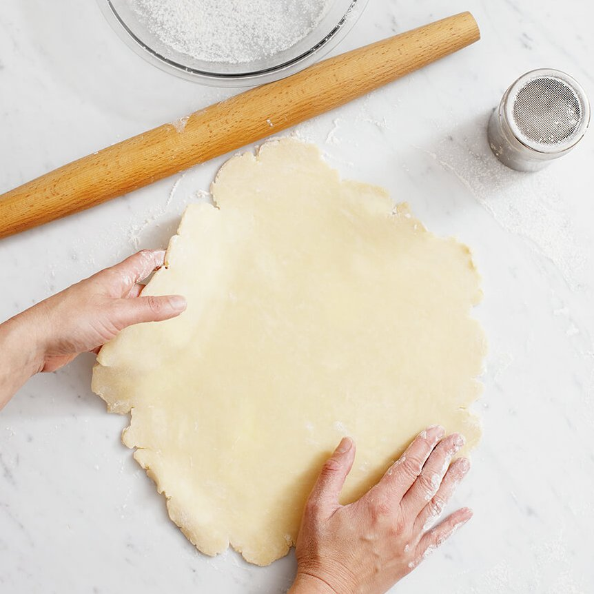

Basic Pie Dough (3-2-1)

Description
This basic pie dough will work for any number of different pies,
whether sweet or savoury. It's quick and easy to make and it has a wonderful
flaky texture once baked.
Ingredients
- 300g All Purpose Flour
- 200g Unsalted (or Salted) Butter - Diced
- 100ml Ice Cold Water
- 1/4tsp Salt
Steps
- Combine the flour, salt, and butter in a mixing bowl
- Rub together with your fingertips until approximately large breadcrumb consistency
- Add water, bring dough together, shape into a ball, wrap in clingfilm
- Refrigerate for at least 30 minutes before use
- Can be stored in the fridge for 3-4 days